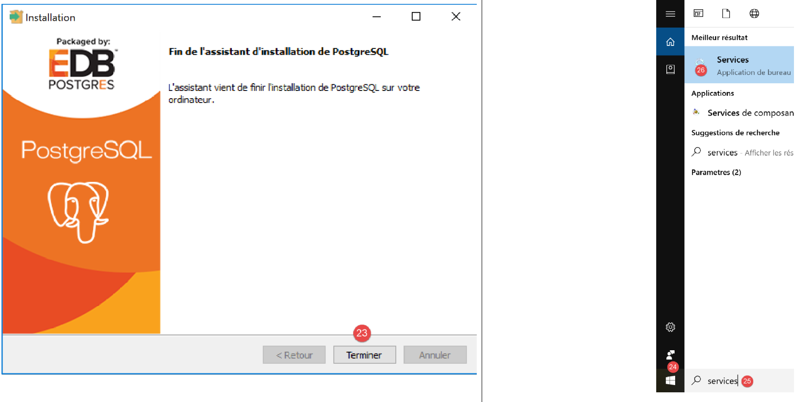
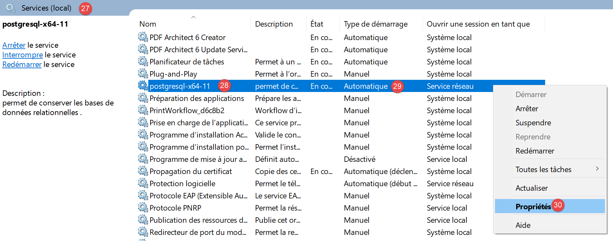
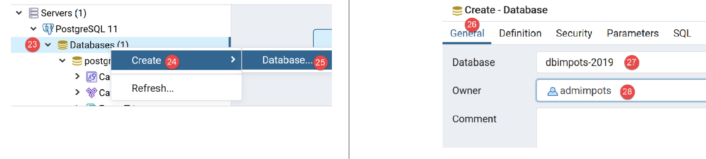
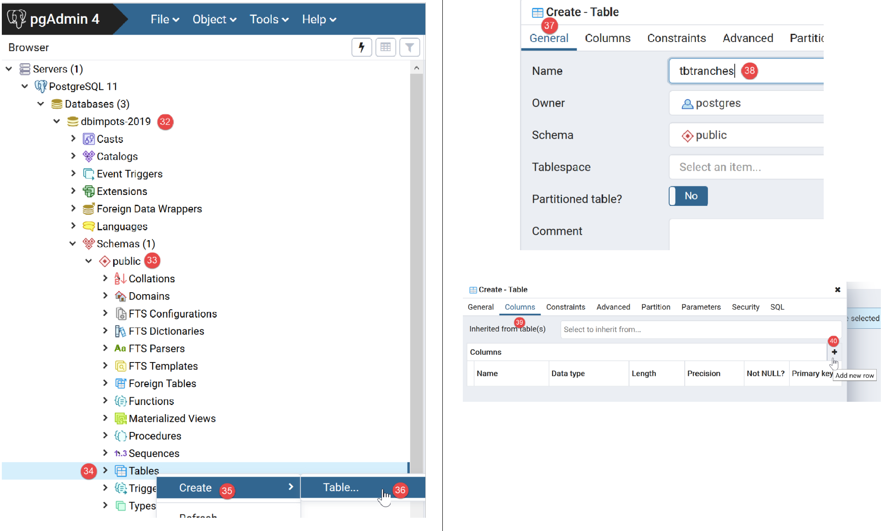
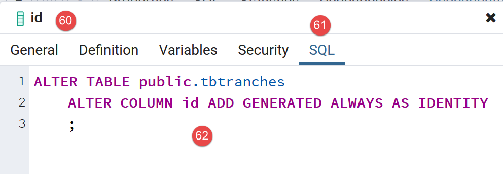
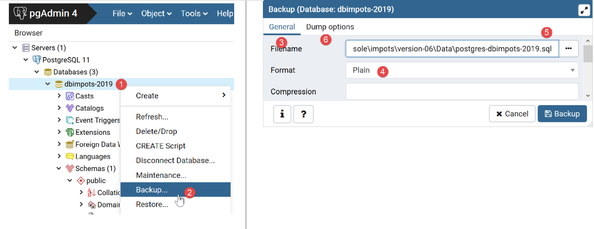
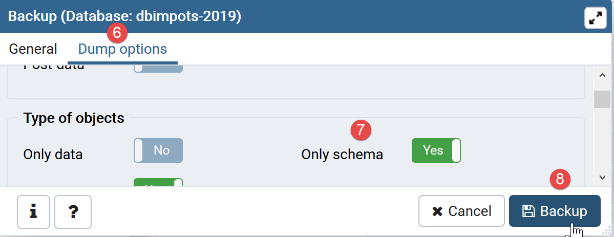
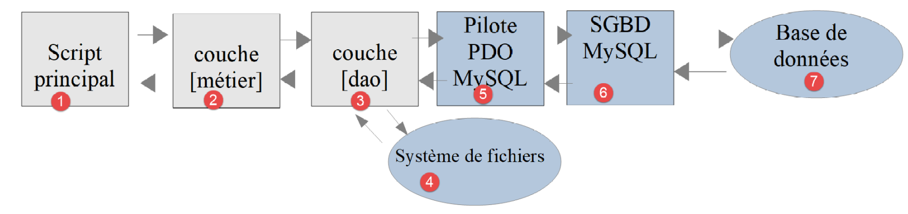

14. Application Exercise – Version 6

We have just implemented the following layered structure:

The DBMS used in the examples was MySQL. In the “link” section, we noted that nothing in the class implementing the [dao] layer suggested that a specific DBMS was being used. We will now verify this by using another DBMS, PostgreSQL. The layered architecture becomes as follows:

14.1. Installing the PostgreSQL DBMS
Distributions of the PostgreSQL DBMS are available at [https://www.postgresql.org/download/] (May 2019). Here we demonstrate the installation of the 64-bit Windows version:


- In [1-4], download the DBMS installer;
Run the downloaded installer:

- In [6], specify an installation directory;

- in [8], the [Stack Builder] option is not needed for what we are doing here;
- in [10], leave the default value;

- In [12-13], we entered the password [root] here. This will be the password for the DBMS administrator, who is named [postgres]. PostgreSQL also refers to this as the superuser;
- In [15], leave the default value: this is the DBMS listening port;

- in [17], leave the default value;
- In [19], the summary of the installation configuration;


On Windows, the PostgreSQL DBMS is installed as a Windows service that starts automatically. Most of the time, this is not desirable. We will modify this configuration. Type [services] in the Windows search bar [24-26]:

- in [29], you can see that the PostgreSQL DBMS service is set to automatic. Change this by accessing the service properties [30]:

- In [31-32], set the startup type to Manual;
- in [33], stop the service;
When you want to start the DBMS manually, return to the [services] application, right-click on the [postgresql] service (34), and start it (35).
14.2. Enabling the PDO extension for the PostgreSQL DBMS
We will modify the [php.ini] file that configures PHP (see linked section):

- In [2], verify that the PostgreSQL PDO extension is enabled. Once done, save the change and restart Laragon to ensure the change takes effect. Then verify the PHP configuration directly from Laragon [3-5].
14.3. Administering PostgreSQL with the [pgAdmin] tool
Start the PostgreSQL DBMS Windows service (see linked section). Then, just as you launched the [services] tool, launch the [pgadmin] tool, which allows you to administer the PostgreSQL DBMS [1-3]:

You may be prompted for the superuser password at some point. The superuser is named [postgres]. You set this password during the DBMS installation. In this document, we assigned the password [root] to the superuser during installation.
- In [4], [pgAdmin] is a web application;
- in [5], the list of PostgreSQL servers detected by [pgAdmin], here 1;
- in [6], the PostgreSQL server we started;
- in [7], the DBMS databases, here 1;
- in [8], the [postgresql] database is managed by the superuser [postgres];
First, let’s create a user [admimpots] with the password [mdpimpots]:


- in [17], we entered [mdpimpots];

- in [21], the SQL code that the [pgAdmin] tool will send to the PostgreSQL DBMS. This is a way to learn PostgreSQL’s proprietary SQL language;
- In [22], after confirming with the [Save] wizard, the user [admimpots] has been created;
Now we create the database [dbimpots-2019]:

Right-click on [23], then [24-25] to create a new database. In the [26] tab, define the database name [27] and its owner [admimpots] [28].

- In [30], the SQL code for creating the database;
- In [31], after confirming with the [Save] wizard, the database [dbimpots-2019] is created;
Now, we will create the table [tbtranches] with the columns [id, limites, coeffr, coeffn]. A distinctive feature of PostgreSQL is that column names are case-sensitive (upper/lowercase), which is not usually the case with other DBMSs. Thus, with MySQL, the SQL statement [select limites, coeffR, coeffN from tbtranches] will work even if the actual columns in the [tbtranches] table are [LIMITES, COEFFR, COEFFN]. With PostgreSQL, this SQL statement will not work. One might then write [select LIMITES, COEFFR, COEFFN from tbtranches], but it still won’t work, because PostgreSQL will execute the query [select limites, coeffr, coeffn from tbtranches]: by default, it converts column names to lowercase. To prevent this, you must write: [select "LIMITES", "COEFFR", "COEFFN" from tbtranches], i.e., you must enclose the column names in quotes. For these reasons, we will give the columns lowercase names. The names of database objects can be a source of incompatibility between DBMSs, as certain names are reserved words in some DBMSs but not in others.
We create the table [tbtranches]:

- use button [40] to create columns;


- after completing the creation wizard by clicking [Save], the table [tbtranches] is created [52-53];
We need to tell the DBMS to generate the primary key [id] itself when inserting a row into the table:

- in [56] we access the properties of the primary key [id];
- in [59], we specify that the column is of type [Identity]. This will cause the DBMS to generate the primary key values;

- in [62], the SQL code generated for this operation;
The [tbtranches] table is now ready.
We repeat the same steps to create the [tbconstantes] table. Here is the expected result:


The [dbimpots-2019] database is now ready. We will populate it with data.
As we did with MySQL, it is possible to export the [dbimpots-2019] database to an SQL file. We can then import this SQL file to recreate the database if it is lost or corrupted. Here, we will export only the database structure and not its data:


The generated file is as follows:
--
-- PostgreSQL database dump
--
-- Dumped from database version 11.2
-- Dumped by pg_dump version 11.2
-- Started on 2019-07-04 08:20:31
SET statement_timeout = 0;
SET lock_timeout = 0;
SET idle_in_transaction_session_timeout = 0;
SET client_encoding = 'UTF8';
SET standard_conforming_strings = on;
SELECT pg_catalog.set_config('search_path', '', false);
SET check_function_bodies = false;
SET client_min_messages = warning;
SET row_security = off;
SET default_tablespace = '';
SET default_with_oids = false;
--
-- TOC entry 198 (class 1259 OID 16408)
-- Name: tbconstantes; Type: TABLE; Schema: public; Owner: postgres
--
CREATE TABLE public.tbconstantes (
plafond_qf_demi_part double precision NOT NULL,
id integer NOT NULL,
single_income_threshold_for_reduction double precision NOT NULL,
couple_income_limit_for_reduction double precision NOT NULL,
reduction_value_half_share double precision NOT NULL,
single_discount_threshold double precision NOT NULL,
couple_discount_limit double precision NOT NULL,
single_tax_threshold_for_discount double precision NOT NULL,
couple_tax_threshold_for_discount double precision NOT NULL,
max_10_percent_deduction double precision NOT NULL,
minimum_10_percent_deduction double precision NOT NULL
);
ALTER TABLE public.tbconstantes OWNER TO postgres;
--
-- TOC entry 199 (class 1259 OID 16411)
-- Name: tbconstantes_id_seq; Type: SEQUENCE; Schema: public; Owner: postgres
--
ALTER TABLE public.tbconstantes ALTER COLUMN id ADD GENERATED ALWAYS AS IDENTITY (
SEQUENCE NAME public.tbconstantes_id_seq
START WITH 1
INCREMENT BY 1
NO MINVALUE
NO MAXVALUE
CACHE 1
);
--
-- TOC entry 196 (class 1259 OID 16399)
-- Name: tbtranches; Type: TABLE; Schema: public; Owner: admimpots
--
CREATE TABLE public.tbtranches (
limits double precision NOT NULL,
id integer NOT NULL,
coeffr double precision NOT NULL,
coeffn double precision NOT NULL
);
ALTER TABLE public.tbtranches OWNER TO admimpots;
--
-- TOC entry 197 (class 1259 OID 16404)
-- Name: tbimpots_id_seq; Type: SEQUENCE; Schema: public; Owner: admimpots
--
ALTER TABLE public.tbtranches ALTER COLUMN id ADD GENERATED ALWAYS AS IDENTITY (
SEQUENCE NAME public.tbimpots_id_seq
START WITH 1
INCREMENT BY 1
NO MINVALUE
NO MAXVALUE
CACHE 1
);
--
-- TOC entry 2694 (class 2606 OID 16429)
-- Name: tbconstantes tbconstantes_pkey; Type: CONSTRAINT; Schema: public; Owner: postgres
--
ALTER TABLE ONLY public.tbconstantes
ADD CONSTRAINT tbconstantes_pkey PRIMARY KEY (id);
--
-- TOC entry 2692 (class 2606 OID 16403)
-- Name: tbtranches tbimpots_pkey; Type: CONSTRAINT; Schema: public; Owner: admimpots
--
ALTER TABLE ONLY public.tbtranches
ADD CONSTRAINT tbimpots_pkey PRIMARY KEY (id);
--
-- TOC entry 2821 (class 0 OID 0)
-- Dependencies: 198
-- Name: TABLE tbconstantes; Type: ACL; Schema: public; Owner: postgres
--
GRANT ALL ON TABLE public.tbconstantes TO admimpots;
-- Completed on 2019-07-04 08:20:32
--
-- PostgreSQL database dump complete
--
14.4. Filling the [tbtranches] table
We have already done this with the MySQL DBMS in the linked section. We simply need to modify the [database.json] file that describes the database:

The [database.json] file becomes the following:
{
"dsn": "pgsql:host=localhost;dbname=dbimpots-2019",
"id": "admimpots",
"pwd": "mdpimpots",
"tableTranches": "public.tbtranches",
"colLimites": "limites",
"colCoeffR": "coeffr",
"colCoeffN": "coeffn",
"tableConstants": "public.tbconstants",
"colQFHalfShareThreshold": "QF_half_share_threshold",
"colIncomeLimitSingleForReduction": "income_limit_single_for_reduction",
"colIncomeLimitCoupleForReduction": "couple_income_limit_for_reduction",
"colReducedValueHalfShare": "reduced_value_half_share",
"colSingleDiscountLimit": "single_discount_limit",
"colIncome_Limit_for_Couple_Deduction": "income_limit_for_couple_deduction",
"colIncomeLimitSingleForDeduction": "income_limit_single_for_deduction",
"colCoupleTaxLimitForDeduction": "couple_tax_limit_for_deduction",
"colMaxTenPercentDeduction": "max_ten_percent_deduction",
"minimum_10_percent_deduction": "minimum_10_percent_deduction"
}
- line 2: the DSN has changed; [pgsql] indicates that we are dealing with the Postgres DBMS;
- lines 5 and 9: the table names have been prefixed with the name of the schema to which they belong [public]. This was not strictly necessary since [public] is the default schema when no schema is specified in the table name;
- lines 6–8, 10–19: the column names have changed;
The script [MainTransferAdminDataFromJsonFile2PostgresDatabase.php] for populating the [dbimpots-2019] database is as follows:
<?php
// Strict adherence to the declared types of function parameters
declare (strict_types=1);
// namespace
namespace Application;
// PHP error handling
// ini_set("display_errors", "0");
// include interface and classes
require_once __DIR__ . "/../../version-05/Entities/BaseEntity.php";
require_once __DIR__ . "/../../version-05/Entities/TaxAdminData.php";
require_once __DIR__ . "/../../version-05/Entities/TaxPayerData.php";
require_once __DIR__ . "/../../version-05/Entities/Database.php";
require_once __DIR__ . "/../../version-05/Entities/TaxExceptions.php";
require_once __DIR__ . "/../../version-05/Utilities/Utilitaires.php";
require_once __DIR__ . "/../../version-05/Dao/InterfaceDao.php";
require_once __DIR__ . "/../../version-05/Dao/TraitDao.php";
require_once __DIR__ . "/../../version-05/Dao/InterfaceDao4TransferAdminData2Database.php";
require_once __DIR__ . "/../../version-05/Dao/DaoTransferAdminDataFromJsonFile2Database.php";
//
// definition of constants
const DATABASE_CONFIG_FILENAME = "../Data/database.json";
const TAXADMINDATA_FILENAME = "../Data/taxadmindata.json";
//
try {
// Create the [dao] layer
$dao = new DaoTransferAdminDataFromJsonFile2Database(DATABASE_CONFIG_FILENAME, TAXADMINDATA_FILENAME);
// transfer data to the database
$dao->transferAdminData2Database();
} catch (TaxException $ex) {
// display the error
print "The following error occurred: " . utf8_encode($ex->getMessage()) . "\n";
}
// end
print "Done\n";
exit;
Comments
Only lines 12–21, which load the files needed to run the application, change. They change because the value of [__DIR__] changes: it now points to the [version-07/Main] folder.
When this script is run, the following result is obtained in the [tbtranches] table:

- Right-click on [1], then on [2-3];
- in [4], we see the tax bracket data;
We repeat the same process for the constants table [tbconstantes]:


Note that to run the script, the Laragon application does not need to be active: neither the Apache server nor the MySQL DBMS is required. We only need the PostgreSQL DBMS, for which we have started the Windows service.
14.5. Tax Calculation

The [dao] (3) and [business] (2) layers have already been written. We have already written the main script for the MySQL DBMS in the linked section. We simply need to take the script [MainCalculateImpotsWithTaxAdminDataInMySQLDatabase.php] and adapt it to the PostgreSQL DBMS. It is now called [MainCalculateImpotsWithTaxAdminDataInPostgresDatabase.php]:

The script [MainCalculateImpotsWithTaxAdminDataInPostgresDatabase.php] is as follows:
<?php
// Strict adherence to the declared types of function parameters
declare (strict_types=1);
// namespace
namespace Application;
// PHP error handling
//ini_set("display_errors", "0");
// Include interface and classes
require_once __DIR__ . "/../../version-05/Entities/BaseEntity.php";
require_once __DIR__ . "/../../version-05/Entities/TaxAdminData.php";
require_once __DIR__ . "/../../version-05/Entities/TaxPayerData.php";
require_once __DIR__ . "/../../version-05/Entities/Database.php";
require_once __DIR__ . "/../../version-05/Entities/TaxExceptions.php";
require_once __DIR__ . "/../../version-05/Utilities/Utilitaires.php";
require_once __DIR__ . "/../../version-05/Dao/InterfaceDao.php";
require_once __DIR__ . "/../../version-05/Dao/TraitDao.php";
require_once __DIR__ . "/../../version-05/Dao/DaoImpotsWithTaxAdminDataInDatabase.php";
require_once __DIR__ . "/../../version-05/Business/BusinessInterface.php";
require_once __DIR__ . "/../../version-05/Business/Business.php";
//
// definition of constants
const DATABASE_CONFIG_FILENAME = "../Data/database.json";
const TAXADMINDATA_FILENAME = "../Data/taxadmindata.json";
const RESULTS_FILENAME = "../Data/results.json";
const ERRORS_FILENAME = "../Data/errors.json";
const TAXPAYERSDATA_FILENAME = "../Data/taxpayersdata.json";
try {
// Create the [dao] layer
$dao = new DaoImpotsWithTaxAdminDataInDatabase(DATABASE_CONFIG_FILENAME);
// Create the [business logic] layer
$business = new Business($dao);
// Calculate taxes in batch mode
$businessLogic = businessLogic.executeBatchTaxes(TAXPAYERSDATA_FILENAME, RESULTS_FILENAME, ERRORS_FILENAME);
} catch (TaxException $ex) {
// display the error
print "An error occurred: " . utf8_encode($ex->getMessage()) . "\n";
}
// end
print "Done\n";
exit;
Comments
Only lines 12–22, which load the files needed to run the application, change. They change because the value of [__DIR__] changes: it now points to the [version-07/Main] folder.
Execution Results
The same as those obtained in previous versions.
14.6. [Codeception] Tests
As with previous versions, we validate this version with [Codeception] tests:

14.6.1. [DAO] layer test
The [DaoTest.php] test is as follows:
<?php
// Strict adherence to the declared types of function parameters
declare (strict_types=1);
// namespace
namespace Application;
// root directories
define("ROOT", "C:/Data/st-2019/dev/php7/poly/scripts-console/impots/version-06");
define("VENDOR", "C:/myprograms/laragon-lite/www/vendor");
// include interface and classes
require_once ROOT . "/../version-05/Entities/BaseEntity.php";
require_once ROOT . "/../version-05/Entities/TaxAdminData.php";
require_once ROOT . "/../version-05/Entities/TaxPayerData.php";
require_once ROOT . "/../version-05/Entities/Database.php";
require_once ROOT . "/../version-05/Entities/TaxException.php";
require_once ROOT . "/../version-05/Utilities/Utilitaires.php";
require_once ROOT . "/../version-05/Dao/InterfaceDao.php";
require_once ROOT . "/../version-05/Dao/TraitDao.php";
require_once ROOT . "/../version-05/Dao/DaoImpotsWithTaxAdminDataInDatabase.php";
// third-party libraries
require_once VENDOR . "/autoload.php";
// definition of constants
const DATABASE_CONFIG_FILENAME = ROOT ."../Data/database.json";
class DaoTest extends \Codeception\Test\Unit {
// TaxAdminData
private $taxAdminData;
public function __construct() {
parent::__construct();
// creation of the [dao] layer
$dao = new DaoImpotsWithTaxAdminDataInDatabase(DATABASE_CONFIG_FILENAME);
$this->taxAdminData = $dao->getTaxAdminData();
}
// tests
public function testTaxAdminData() {
…
}
}
Comments
- lines 9–28: definition of the test environment. We use the same environment, without the [business] layer, as the one used by the main script [MainCalculateImpotsWithTaxAdminDataInPostgresDatabase] described in the linked section;
- lines 34–39: construction of the [dao] layer;
- line 38: the [$this→taxAdminData] attribute contains the data to be tested;
- lines 42–44: the [testTaxAdminData] method is the one described in the linked section;
The test results are as follows:

14.6.2. Testing the [business] layer
The [MetierTest.php] test is as follows:
<?php
// Strict adherence to the declared types of function parameters
declare (strict_types=1);
// namespace
namespace Application;
// root directories
define("ROOT", "C:/Data/st-2019/dev/php7/poly/scripts-console/impots/version-06");
define("VENDOR", "C:/myprograms/laragon-lite/www/vendor");
// include interface and classes
require_once ROOT . "/../version-05/Entities/BaseEntity.php";
require_once ROOT . "/../version-05/Entities/TaxAdminData.php";
require_once ROOT . "/../version-05/Entities/TaxPayerData.php";
require_once ROOT . "/../version-05/Entities/Database.php";
require_once ROOT . "/../version-05/Entities/TaxException.php";
require_once ROOT . "/../version-05/Utilities/Utilitaires.php";
require_once ROOT . "/../version-05/Dao/InterfaceDao.php";
require_once ROOT . "/../version-05/Dao/TraitDao.php";
require_once ROOT . "/../version-05/Dao/DaoImpotsWithTaxAdminDataInDatabase.php";
require_once ROOT . "/../version-05/Business/BusinessInterface.php";
require_once ROOT . "/../version-05/Business/Business.php";
// third-party libraries
require_once VENDOR . "/autoload.php";
// definition of constants
const DATABASE_CONFIG_FILENAME = ROOT . "../Data/database.json";
class BusinessLogicTest extends \Codeception\Test\Unit {
// business layer
private $business;
public function __construct() {
parent::__construct();
// creation of the [DAO] layer
$dao = new DaoImpotsWithTaxAdminDataInDatabase(DATABASE_CONFIG_FILENAME);
// Create the [business] layer
$this->business = new Business($dao);
}
// tests
public function test1() {
…
}
--------------------------------------------------------------------
public function test11() {
…
}
}
Comments
- lines 9–28: definition of the test environment. We use the same one as the main script [MainCalculateImpotsWithTaxAdminDataInPostgresDatabase] described in the linked section;
- lines 34–40: construction of the [dao] and [business] layers;
- line 39: the attribute [$this→business] references the [business] layer
- lines 43–49: the methods [test1, test2…, test11] are those described in the linked section;
The test results are as follows: